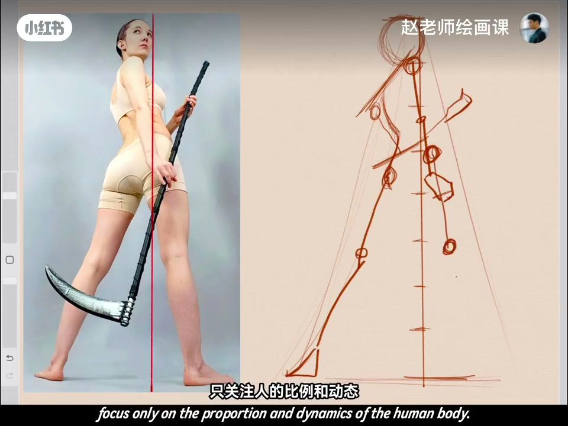
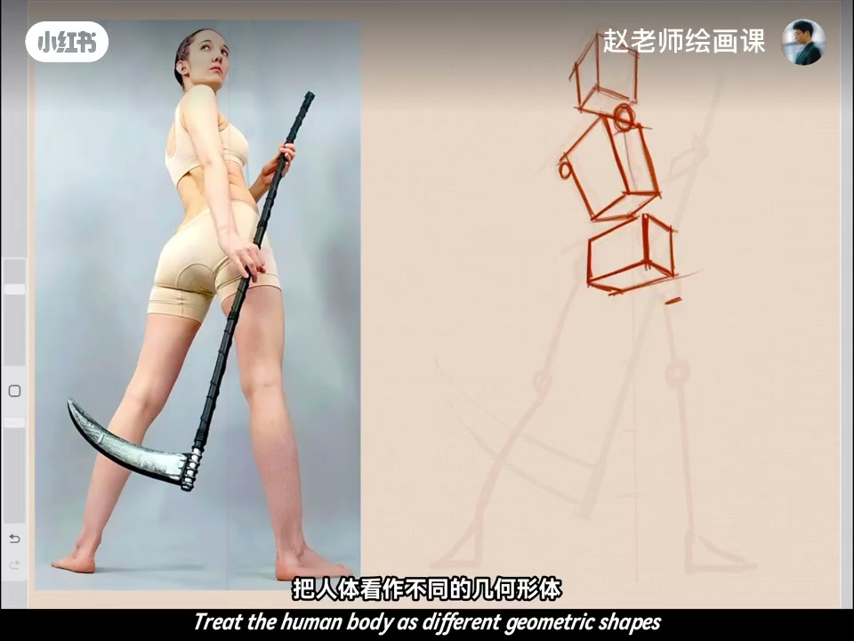
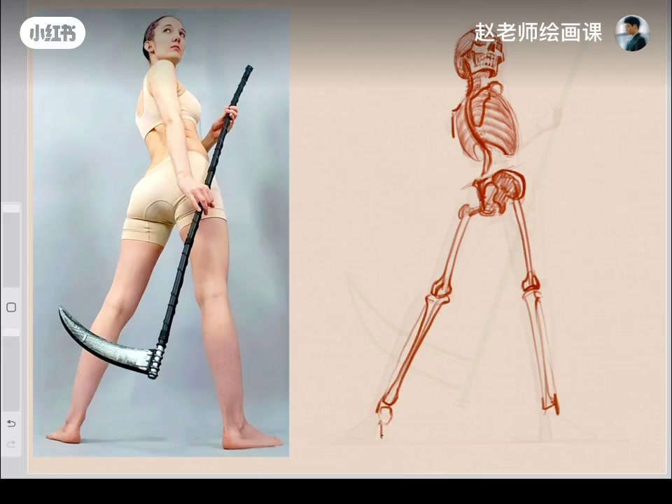
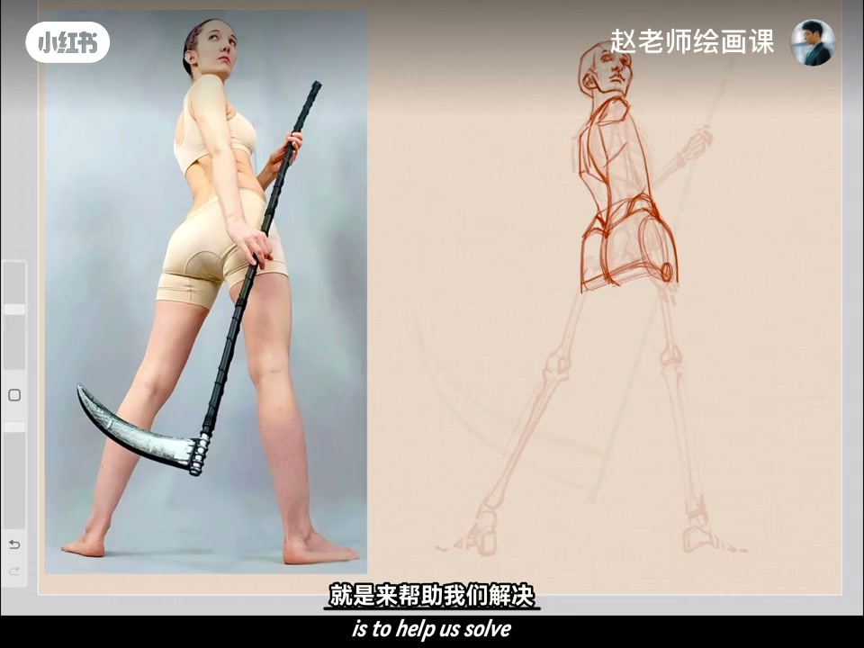

内容要点
同一人体素材四种吃法：①火柴人——只关注比例与动态，肩线与盆骨线必须准；②几何体块——训练动态透视，是会不会画的重要分水岭；③骨骼——探索皮下结构与透视；④肌肉——解决「结构很假」的常见问题，更主动画出好看又准确的人体。合称「一虾四吃」。素材放评论区。
知识结构
只盯比例动态；肩线盆骨线要准。
动态透视；会画／不会画分水岭。
皮下结构透视更透彻。
解决结构假；一虾四吃收束。
别拿素材只临一遍表面：按火柴人→体块→骨骼→肌肉四层「吃」同一张图，进步才叠得起来。
00:00-00:23第一种：火柴人
今天讲人体素材四种练习方法。第一种火柴人：把人当成火柴棍，画的时候只关注比例和动态。注意肩线和盆骨线这两条重要动态线一定要找准确。
00:15 右侧比例尺火柴人对照持镰模特，字幕强调只关注比例与动态。

00:23-00:47第二种：几何体块
第二种几何体块练习：把人体看作不同的几何形体，来训练对人体动态透视的把握。比起火柴人难了不少，却也是会画画的人与不会画画的人的重要分水岭。
00:30 头胸盆方盒扭转，把透视难度可视化。

00:47-01:10第三种：骨骼训练
第三种骨骼训练：探索皮肤下的骨骼，可让我们对人体的结构和透视理解更加透彻。
01:00 橙红骨骼叠淡剪影，是「皮下」证据。

01:10-01:45第四种：肌肉——一虾四吃
最后一种肌肉练习：帮助解决画出来结构很假的常见问题。好好研究肌肉，你会更主动画出好看又准确的人体结构。
以上就是人体素材练习的「一虾四吃」。四个方法学会了吗？动手试试吧，素材在评论区。

完整转录（27段）
以下文本由 Whisper medium 模型自动转录，可能存在少量识别误差，已尽可能修正。
今天我们来讲人体素材的四种练习方法
首先第一种火柴人练习
顾名思义就是把人当成火柴棍
这可以让文化的时候只关注人的比例和动态
这里要注意啊
肩线和盆骨线这两条重要的动态线
一定要找准确
第二种几何体块练习
把人体看作不同的几何形体
来训练我们对于人体动态透视的把握
比起火柴人啊这一步呢就难了不少
不过啊这也是会画画的人和不会画画的
重要分水滴
第三种骨骼训练
探索皮肤下的骨骼
可以让我们对人体的结构和透视
理解的更加透彻
最后一种啊肌肉练习
这个练习啊就是来帮助我们解决
画出来的结构很假的这种常见的问题
好好研究一下肌肉
你会更主动的画出好看又准确的人体结构
好了以上就是人体素材练习的一瞎四吃
四个练习方法你学会了吗
快去动你试试吧
素材放在评论区期待大家的美作
拜拜